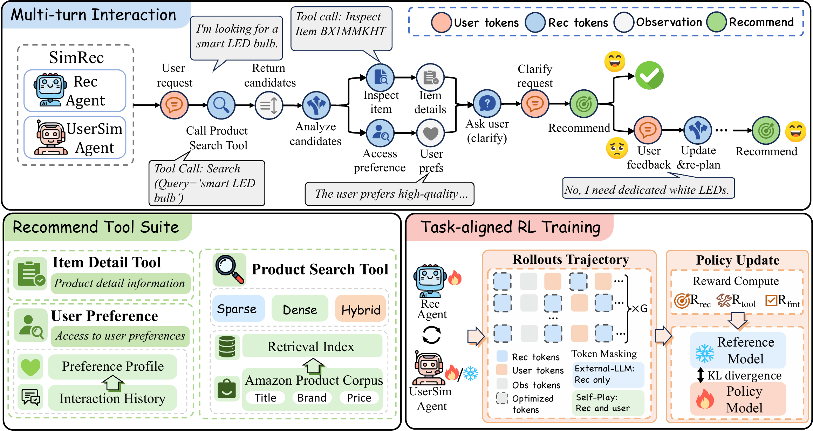

Typical recommender agent
A hand-written workflow
- search
- inspect
- recommend
The order of retrieval, inspection, clarification, and recommendation is fixed in advance.
Recommendation agents · Reinforcement learning
Learning to Search, Ask, and Recommend from Simulated Interaction
One tool-integrated policy decides when to retrieve, inspect, ask, and recommend, trained end to end with GRPO against a task-anchored simulated shopper.
Preprint · arXiv:2611.15426
The idea
Typical recommender agent
The order of retrieval, inspection, clarification, and recommendation is fixed in advance.
SimRec
At every turn one policy picks the next action, and it can revise after a rejection.
Recommendation agents can retrieve products, inspect their attributes, ask a shopper for clarification, and revise after rejection. In many systems the order of these actions is a hand-written workflow. SimRec trains the complete, tool-integrated interaction policy with GRPO: a task-anchored simulated shopper gives feedback during the interaction, and a trajectory-level reward credits natural retrieval, grounded tool use, and the final recommendation.
Method
The agent searches, inspects, and asks; the shopper rejects and the agent revises; then GRPO learns from complete multi-turn trajectories.
I’m looking for a smart LED bulb.
search_products(query="smart LED bulb")
Ranked Top-100 results; the Top-20 are visible.
get_item_details(item_id="BX1MMKHT")
Full grounded metadata: title · brand · price …
get_user_preference()
“The user prefers high-quality …”
asks the shopper a clarification question
clarifies the request
recommended_item_id: …
not in target set
“No, I need dedicated white LEDs.”
search again, inspect, consult preferences, or ask
recommended_item_id: …
✓ in target set
search_products
get_item_details
Full grounded metadata for a selected product.
get_user_preference
The simulator sees the current need, recent dialogue, and the latest action, never the target item or the preference profile.
Rollouts of one task G = 8
outlined = optimized tokens; faded tokens are masked out. Observations are never optimized.
Trajectory reward
Group-relative advantage: each rollout’s reward is compared with the others for the same task.
Policy update

How it works
Each task contains an initial shopping request, a current task need, a target set used only by the environment, and optionally a history-derived preference summary. At each step the recommender sees the dialogue and prior tool results, then chooses one action.
A recommendation can be rejected. The agent may then search again, inspect a candidate, consult the preference tool, or ask a clarification question before revising its decision.
search_productsRanked Top-100 catalog results; the Top-20 are visible by default.
get_item_detailsFull grounded metadata for a selected product.
get_user_preferenceA precomputed, one-sentence preference summary when available.
shopper-facing questionA direct simulator response.
structured recommendationEnvironment success check and simulated shopper feedback.
User simulation
The simulator receives the current shopping need, recent dialogue, and latest agent action. It does not receive the target item ID or the preference profile. After a rejected recommendation it names one or two missing requirements without naming the target; the environment checks success on its own.
Trajectory reward
GRPO jointly optimizes the final Hit@1, natural retrieval NDCG, valid tool use, and recommendation formatting, while penalizing redundant queries and unnecessarily long interactions.
Training-only target injection
When natural retrieval misses the target, it may be inserted into the visible candidate list, only during training and only after two shopper turns. Natural, unmodified retrieval results always determine the retrieval reward and every evaluation metric; injection is disabled at evaluation.
Preference profiles
For Amazon C4, histories are deduplicated, ordered in time, filtered to remove the task target, and summarized once by an LLM before rollout. The preference tool sees only that sentence, never the raw history.
Results
All methods use Qwen3-4B under the paper’s evaluation protocol. Retrieval metrics are instance-weighted percentages from the best non-redundant, natural Top-100 search in a session; Hit@1 asks whether the final recommendation belongs to the target set. Target injection is disabled in every evaluation run.
Qwen3 Dense retrieval unless labelled BM25. Pick a metric tile to chart it.
| Dataset | Method | NDCG@100 | Recall@100 | Hit@1 |
|---|
On Amazon C4, removing preference access, item inspection, or multi-turn feedback each lowers both retrieval and recommendation quality.
Change relative to full SimRec in parentheses.
Takeaways
Give the agent the tools and a shopper to talk to, reward the whole conversation, and it learns when to search, when to ask, and when to recommend.
At inference the policy is given no tool-use order. It learns to retrieve, inspect candidates, consult preferences when useful, and revise after feedback.
32.23 → 35.42NDCG@100 on ESCI, Qwen3-4B base → SimRec-4B
Without the item-detail tool, the final recommendation suffers most of all ablations on Amazon C4.
9.75 → 6.04Hit@1 on Amazon C4, full SimRec → without item details
Removing multi-turn feedback, so the agent cannot be rejected and revise, lowers both retrieval quality and Hit@1.
22.14 → 24.72NDCG@100 on Amazon C4, without → with multi-turn feedback
Self-play needs no simulator endpoint, but on both datasets the external simulator gives the stronger policy.
24.72 vs 19.77NDCG@100 on Amazon C4, external simulator vs self-play
The same agent with a BM25 index scores far below the dense default on both datasets: learned tool use does not make up for a weaker retriever.
35.42 vs 24.02NDCG@100 on ESCI, Qwen3 Dense vs BM25
Code
Interaction environment, user simulator (external or self-play), tool runtime, GRPO reward, and dataset preparation for ESCI and Amazon C4, built on verl. The release contains no datasets, user histories, weights, indexes, or API keys; see the data preparation guide.
View on GitHub ↗# Qwen3-4B, eight GRPO rollouts, external shopper
$ cp configs/train.env.example configs/train.env
$ export SIMREC_USER_LLM_API_KEY=...
$ CONFIG_FILE=configs/train.env bash scripts/train_simrec.sh
# Held-out evaluation (target injection off)
$ EVAL_MODEL_PATH=checkpoints/exported/model \
CONFIG_FILE=configs/train.env \
bash evaluation/evaluate_simrec.shCitation
@article{zhang2026simrec,
title = {SimRec: Learning to Search, Ask, and Recommend from Simulated Interaction},
author = {Zhang, Yaxin and Wu, Xingyu and Yan, Yuchen and Dai, Yuqin and Zhao, Hong and Shen, Lixing and Chen, Zhan and Shao, Jian and Shen, Yongliang},
journal = {arXiv preprint arXiv:2611.15426},
year = {2026}
}